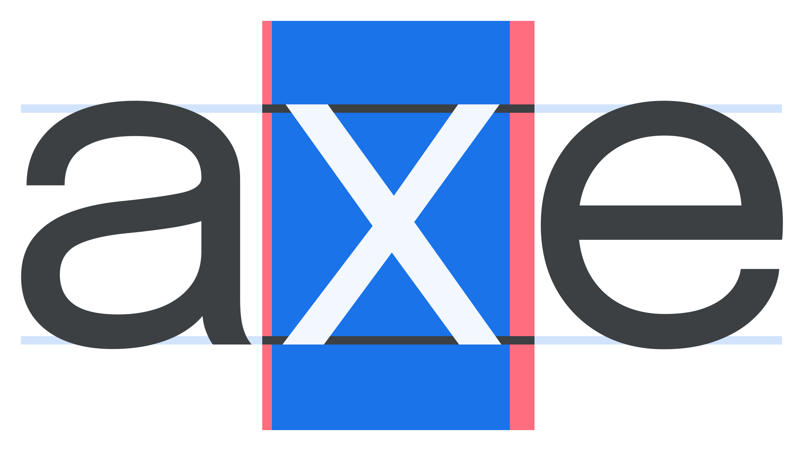

Spacing
By Google Fonts Knowledge contributors · Google Fonts Knowledge.
Original article · Source on GitHub · CC BY-SA 4.0. Text, illustrations and existing credits reproduced from the licensed Knowledge repository. Open Shelf adapted the layout and links; these adaptations are also CC BY-SA 4.0. No endorsement implied.
In type design, spacing refers to the act of setting the horizontal space around each glyph. This is different from kerning, where the type designer adds specific rules (known as kerning data) to determine the space between two or more specific glyphs. However, the reference to a “well-spaced font” generally means the spacing is both visually consistent and appropriate (i.e., is not too loose or too tight) for the typical size the font is expected to be used at.

The blue box illustrates the internal spacing within the “x” glyph; the red boxes illustrate the external spacing. Note how the left and right values are intentionally unequal.
When setting type, spacing can also refer to the act of making any typographic adjustment that affects space, such as leading (the vertical space between two lines of type), tracking (the overall horizontal spacing between glyphs in a block of text), or kerning (the specific horizontal spacing between two or more glyphs).